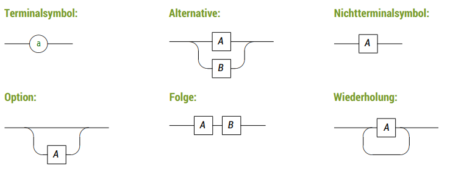
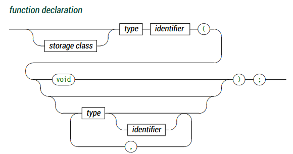

Introduction
How does the compiler know whether a program is "correct" (in the sense of compilable) or not? We basically distinguish between grammar and semantics.
Grammar (like we know it from school) consists of morphology (Formenlehre v Wörtern) and syntax (Sätze). In the realm of programming morphology practically doesn't matter therefore grammar and syntax are mostly used interchangeably.
The semantics (meaning of a sentence) do not matter to the compiler.
Syntax
The syntax of a language is a set of rules after which expressions are built. This is true for natural languages like English and for formal languages likes C or Python, as well as mathematical logic or description languages etc.
Expressions in the above definition might be phrases, formulas are program/code statements.
Often times the better you understand the semantics the harder it gets to recognize the syntax (for example in my motherlanguage I don't think about the SPO-rule for subject-predicate-object at all).
Every formal language consists of symbols/tokens. A symbol is the smallest observable unit in a language (kleinste Einheit der Betrachtung innerhalb der Sprache). Symbols can be single tokens, combinations of such or whole words.
Every finite, non-empty set \(\sum\) of symbols is called alphabet.
With the elements in \(\sum\) we can build expression. The "empty expression" is represented as \(\epsilon\) (epsilon).
The set \(\sum = {0,1,2,3,4,5,6,7,8,9}\) for example is sufficient to build all natural numbers in the decimal system.
/The set of all strings(combinations) (Zeichenketten) the symbols from \(\sum\) can build is called Kleene star \(\sum *\) of \(\sum\) (Kleenesche Hülle).
For example: \[\sum = {a,b} \Rightarrow \sum * = {\epsilon, a, b, aa, bb, ab, ba, aaa, aab, aba,baa, ...} \\]
The set of all string without the empty string is represented as \(sum +\) Kleene Plus.
Each subset \(L \subseteq \sum*\) is also a formal language.
In the following context we focus on formal languages and "languages" then refers to such.
Formal languages and generative/formal grammar
How can the syntax of a language be described? Which expressions/strings in a language are valid and which aren't? An enumeration of valid expressions is usually unpractical because the quantity of expressions is often times enormously big or infinite.
A solution to this is to describe how valid expressions can/may be generated. These "rules" are called generative/formal grammar. From wikipedia: "In formal language theory, a grammar (when the context is not given, often called a formal grammar for clarity) is a set of production rules for strings in a formal language. The rules describe how to form strings from the language's alphabet that are valid according to the language's syntax. A grammar does not describe the meaning of the strings or what can be done with them in whatever context—only their form."
For generative grammar of a language \(L\) a second alphabet \(V\) of variables is used in addition to the alphabet \(\sum\).
- elements of \(\sum\) are called terminal symbols
- elementary symbols of a language
- cannot be replaced/reproduced via production rules
- eg: "for", "if"
- elements of \(V\) are called nonterminal symbols (in some literature it is N instead of V)
- are reproducable/replacable via production rules
When speaking about those elements in an abstract way usually lower case letters (a,b,c..) are used for elements of \(\sum\) and uppercase letters for elements of \(V\).
A grammar is defined by production rules (or just 'productions') that specify which symbols may replace which other symbols; these rules may be used to generate strings, or to parse them. Each such rule has a head, or left-hand side, which consists of the string that may be replaced, and a body, or right-hand side, which consists of a string that may replace it. Rules are often written in the form head → body; e.g., the rule a → b specifies that a can be replaced by b.
To generate an expression we begin with a start symbol \(S \in V\).
Then depending on the nature of the rules \(P\) we distinguish between different kind of grammars (a regular grammar is a left or a right regular grammar):
- a left regular grammar is a formal grammar (V, Σ, P, S), such that all rules in P obey the forms:
- A → a - where A is a non-terminal in V and a is a terminal in Σ
- A → Ba - where A and B are in V and a is in Σ
- A → ε - where A is in N and ε is the empty string.
- so only one nonterminal symbol on the left side and on the right side one terminal symbol that may be preceeded by one nonterminal symbol max
- a right regular grammar is a formal grammar (V, Σ, P, S) such that all the production rules in P are of one of the following forms:
- B → a - where B is a non-terminal in V and a is a terminal in Σ
- B → aC - where B and C are non-terminals in V and a is in Σ
- B → ε - where B is in V and ε denotes the empty string, i.e. the string of length 0.
- so only one nonterminal symbol on the left side and on the right side one terminal symbol that may be followed by one nonterminal symbol max
Types of grammars:
- regular grammar (reguläre Grammatik) → either all rules of P are of left regular grammar nature or right regular grammar nature (not both/mixed)
- context-free grammar (kontextfreie Grammatik) → a context-free grammar is a grammar in which the left-hand side of each production rule consists of only a single nonterminal symbol
-
context-sensitive grammar (kontextbehaftet/sensitive Grammatik) → a context-sensitive grammar is a formal grammar in which the left-hand sides and right-hand sides of any production rules may be surrounded by a context of the same terminal and nonterminal symbols
αAβ → αγβ - unrestricted grammar (allgemeine Grammatik)
After the american linguist Noam Chomsky those grammars build the so called Chomsky-Hierarchy in which they're also called as:
- Type-0 grammars → unrestricted grammars (allgemeine Grammatiken)
- Type-1 grammars → context-sensitive grammars
- Type-2 grammars → context-free grammars
- Type-3 grammars → regular grammars
Each n-1 grammar can "do everything and more" that a grammar of type n can do (a type 1 grammar can do everything a type 2 grammar can and so on; Grammatiken niedrigeren Typs sind erzeugungsmächtiger als die höherer Typen)
Syntax Diagrams
How may we describe the rules of grammars? For the following we limit us to (maximal) contrext free grammars. To describe grammar rules there exist two main approaches:
- syntax diagrams
- (extended) Backus-Naur form
I was told that these were asked in last years exam
Syntax diagrams consist of of:
- boxes with round corners → terminal symbols (lowercase, see above)
- boxes with straight corners → nonterminal symbols (uppercase, see above)
- connections via lines and arrows
- each walkable way (in arrow direction) is valid a expression (Jeder (in Pfeilrichtung) begehbare Weg ist ein valider Ausdruck)
Components: 
An example of a (simplified) function declaration in C in a syntax diagram: 
Backus-Naur Form
While syntax diagrams are easy to read, they're quite cumbersome and take a lot of space. A more compact alternative is the Backus-Naur form (BNF).
BNF uses meta symbols:
-
::=definition symbol -
|alternative symbol -
< >nonterminal brackets which convert any sequence of letters, digits and spaces into a nonterminal symbol
All symbols which are neither meta symbols nor nonterminalsymbols are terminal symbols.
BNF is directly translatable into context-free grammar, but needs (for example for loops) syntactic helper variables.
That's why there's also the Extended Backus-Naur form (EBNF) which is like BNF plus:
-
[ ... ]→ description of optional parts -
{ ... }→ description of repetitions
There are also some syntactic differences:
- arbitrary paren placement (Klammerung)
- definition symbol is
= - terminal symbols are wrapped in
""or'' - nonterminal symbols arent specially marked
- there also might be whitespaces in nonterminal symbol identifiers, the sequence is then separated via commas eg
signed integer = sign, integer
- there also might be whitespaces in nonterminal symbol identifiers, the sequence is then separated via commas eg
- expressions end with semicolons
; - specific repetitions via
4 * (...) - comments via
(* This is a comment*)
A (E)BNF defintion or a syntax diagram is complete (vollständig) if a rule exist on the left side for every nonterminal symbol on the right hand rule side.
Regular Grammar in Action
Now we'll introduce regular expressions which are a compact notation for regular grammars.
String searching or pattern matching in (certain) files is such a common task that "tools" using regular expression exist to help with it (for example grep, sed, awk, perl, Python, C#.. provide ways to pattern match with regular expressions).
Since the 1980s, different syntaxes for writing regular expressions exist, one being the POSIX standard and another, widely used, being the Perl syntax.
Because there is only a limited amount of symbols/characters/tokens (Zeichen) available regular expressions differentiate between regular("normal") (terminal)symbols and meta characters, with a special meaning. Common but not all meta characters are:
-
^matches the starting position within the string -
.dot wildcard matches any single character (newlines sometimes excluded tho) -
[ ]a bracket expression matches a single character that is contained within the brackets eg[abc]matches "a", "b", or "c"-
[^ ]matches a single character that is not contained within the brackets
-
= $ matches the ending position of the string or the position just before a string-ending newline (in line-based tools, it matches the ending position of any line)
-
*matches the preceding element zero or more times -
+matches the preceding element one or more times -
{n,m}matches the preceding element at leastnand not more thanmtimes (ega{1,3}matches onlya,aaandaaa) -
\escapes the previous meta character
There are also character classes which are the most basic regex concept after a literal match. It makes one small sequence of characters match a larget set of characters (eg in ASCII [a-z] for lowercase letters). Some examples of POSIX character classes:
-
[:alpha:]for alphabetic characters (A-Z, a-z) -
[:digit:]for digits (0-9) -
[:alnum:]for alphanumeric characters (A-Z,a-z,0-9) -
[:blank:]for space and tab -
[:print:]visible characters and the space character (printable characters)
Example usage of grep which finds all defintions of time_t in header files (option -E stands for extended-regexp):
grep −E "typedef ([_[:alpha:]][_[:alnum:]]*[[:blank:]]+)+time_t;" *.h # (copied from slides doesnt work for me :D)
Compiler
F29